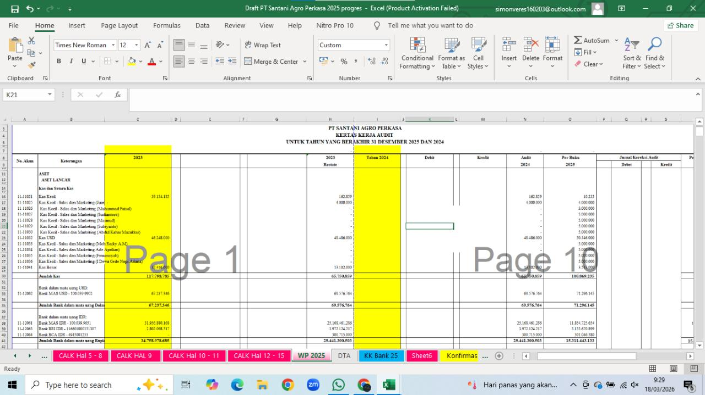

JUNIOR AUDITOR INTERN
Comprehensive Financial Statement Audit
PT Santani Agro Perkasa
Assigned as a Junior Auditor Intern to conduct a comprehensive financial statement audit for a prominent agricultural and agrochemical corporation, with a focus on financial accuracy, completeness, and PSAK compliance.
Key Contributions & Technical Executions- Performed rigorous vouching and tracing procedures across extensive transaction samples to verify financial accuracy, completeness, and compliance with Indonesian Financial Accounting Standards (PSAK).
- Conducted bank reconciliations and verified trade receivables and payables confirmations to identify and cross-check potential variances.
- Developed and structured audit working papers (Kertas Kerja Audit) using advanced MS Excel functions and the ATLAS application.
- Evaluated client documentation and internal controls, strengthening attention to detail, analytical risk assessment, and professional skepticism.
MS Excel · ATLAS · Vouching · Tracing · Bank Reconciliation · Internal Controls · PSAK